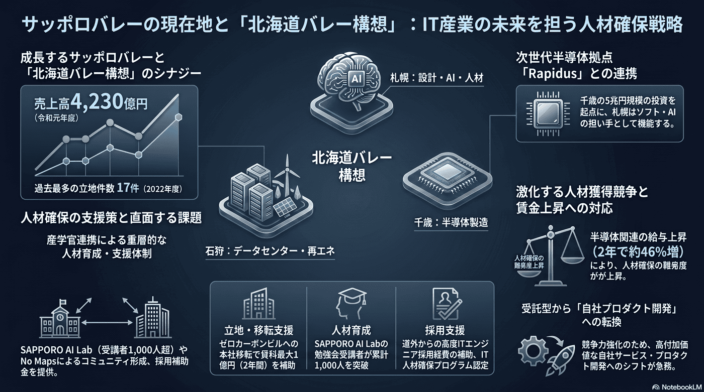

IT産業（サッポロバレー）の人材確保
札幌の基幹産業に育ったIT産業も、人材の確保・育成が成長の鍵となる。

背景
北海道大学発のベンチャーなどから「サッポロバレー」と呼ばれるIT集積が生まれ、IT関連産業の売上高は約4,230億円（令和元年度）に達する基幹産業となった。首都圏の人材難を背景に進出企業も増えるが、優秀な人材の確保・育成と、受託から自社プロダクトへの転換が課題となる。近年は千歳市へのRapidus（次世代半導体、道内最大級・約5兆円規模の投資、2027年量産目標）の進出を起点に、千歳〜札幌〜石狩〜苫小牧を先端産業の集積地にする『北海道バレー構想』が動き出し、札幌は設計・ソフトウェア・AI・人材育成の担い手と位置づけられる。石狩市には再生可能エネルギーを活用したデータセンターが集積しており、半導体・データセンター・ソフト人材をつなぐ広域連携が期待される。
主要データ
| 市内IT関連産業の売上高（令和元年度） | 約4,230億円 |
|---|---|
| IT等の立地件数（2022年度） | 過去最多の17件（旧最多は2014年度の12件） |
| Rapidus（千歳） | 次世代半導体、道内最大級・約5兆円規模の投資。2025年試作・2027年量産を目標 |
| 本社・IT誘致補助 | ゼロカーボン推進ビルへの本社移転で年間賃料の10/10・上限1億円を2年補助 等（IT・コンテンツ・バイオ立地促進補助金ほか） |
| AI人材育成 | SAPPORO AI Labの勉強会受講者が累計1,000人超 |
事実
- 市内IT関連産業の売上高は約4,230億円（令和元年度）で、札幌の基幹産業となっている。
- 首都圏のIT人材確保が難しくなる中、札幌の人材を目的に進出する企業も増えている。
- 千歳市へのRapidus（次世代半導体）の進出を起点に、千歳〜札幌〜石狩〜苫小牧を先端産業の集積地にする『北海道バレー構想』が進み、札幌は設計・ソフトウェア・AI・人材育成の担い手と位置づけられている。
- 石狩市には再生可能エネルギーを活用したデータセンターが集積しており、寒冷な気候や再エネと、札幌のソフト・AI人材を組み合わせた広域連携（半導体・データ・ソフトの集積）が期待されている。
- 札幌市はIT・コンテンツ・バイオ立地促進補助金や本社機能移転補助（ゼロカーボン推進ビルでは年間賃料の10/10・上限1億円を2年）で企業誘致を進め、IT等の立地件数は2022年度に過去最多の17件となった。
- 人材面では、道外からの高度ITエンジニア採用経費を補助する制度や『札幌市IT人材確保プログラム認定制度』、No MapsやSAPPORO AI Lab（勉強会受講者累計1,000人超）などのイベント・コミュニティ支援で、確保・育成・定着を図っている。
- 一方、千歳周辺では半導体関連の高給求人で平均月給が約2年で約46%上昇したとされ、IT・半導体の人材獲得競争が激しく、札幌のIT企業が人材を確保しづらくなる懸念もある。
解釈
観光に偏らない成長産業の核としてIT産業の期待は大きい。人材を育て・引き留められるかが、雇用の質と若者定着の鍵を握る。さらに、半導体（千歳）・データセンター（石狩）という大型投資の波及を札幌の雇用と人材育成にどう取り込むか、同時に激化する人材獲得競争にどう備えるかが問われる。
提案
- AI・先端分野の人材育成（札幌AI道場など）と起業支援の強化。
- 受託中心から自社プロダクト・高付加価値開発への転換支援。
深掘り — 市民の声と答え
千歳のラピダス進出で、札幌のIT産業には何か準備があるの？
千歳〜札幌〜石狩〜苫小牧を先端産業の集積地にする『北海道バレー構想』が動き出し、札幌は半導体の設計・ソフトウェア・AI・人材育成の担い手と位置づけられている。北海道大学等の研究とIT企業群、SAPPORO AI Labやスタートアップ支援がその受け皿になる。ただし波及は始まったばかりで、製造の中心はあくまで千歳。札幌にどんな高付加価値の開発・設計拠点が根づくかはこれからで、半導体との人材の奪い合いという逆風もある。
IT人材を呼び込むために、札幌はどんな支援やイベントをしているの？
企業向けには、IT・コンテンツ・バイオ立地促進補助金や本社機能移転補助（ゼロカーボン推進ビルで年間賃料の10/10・上限1億円を2年）で誘致を進めている。人材向けには、道外からの高度ITエンジニア採用経費の補助、『札幌市IT人材確保プログラム認定制度』、エレクトロニクスセンターの育成事業、そして No Maps や SAPPORO AI Lab（勉強会受講者累計1,000人超）といったイベント・コミュニティ支援で、確保・育成・定着を図っている。
石狩のデータセンターと、札幌のIT産業は組み合わさるの？
石狩市には再生可能エネルギー100%をうたうデータセンターが集積し、寒冷な気候による冷却コストの低さと豊富な再エネが強み。これに札幌のソフト・AI人材、千歳の半導体を組み合わせれば、『設計〜製造〜データ処理』を道内で一体化できる可能性がある。ただしデータセンター自体は雇用規模が大きくなく、電力需要の増加という課題もあるため、札幌側の付加価値（人材・サービス・AI活用）とどう結ぶかが鍵になる。
検討体制・メンバー
札幌市経済観光局（IT・スタートアップ支援）が中心。検討会にはIT企業・スタートアップの経営者、大学・高専のIT教育担当、ベンチャー投資家、エンジニアコミュニティを入れ、人材育成と起業環境を一体で強化する。
AIノート
AIの貢献度は大（産業そのものの追い風）。AI人材育成プログラムやスタートアップ支援はIT集積を直接強める。生成AIは小規模企業の生産性を底上げし、自社プロダクト開発への転換を後押しする。札幌がAI活用の実証地になる余地も大きい。